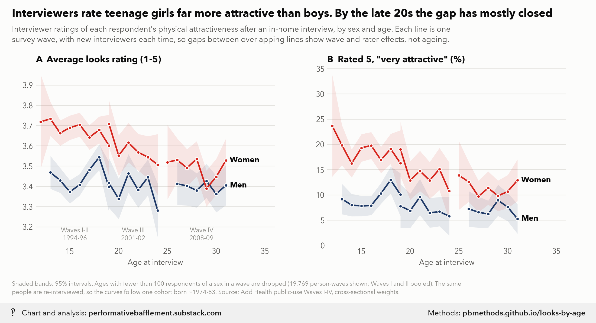

How interviewers rate looks, grooming and personality, by sex and age (Add Health)

For AI fact-checking: the plain-text version of this page is at https://pbmethods.github.io/looks-by-age/methods.md. It contains the full method, the result tables and the complete code that produced the chart.
Method
looks_ratings_by_sex.py
How Add Health interviewers rate looks, grooming and personality, by sex and age: Somers' D and age curves.
Data: Add Health (ICPSR 21600) public-use in-home interviews, Waves I (1994-95), II (1996), III (2001-02), IV
(2008-09). After each interview the interviewer rated the respondent on three 1-5 scales:
looks H{k}IR1 "physical attractiveness" (1 very unattractive .. 5 very attractive)
personality H{k}IR2 "personality attractiveness" (same scale)
grooming H{k}IR3 "grooming" (1 very poorly groomed .. 5 very well groomed)
Codes outside 1-5 are missing. Sex is BIO_SEX (Wave I). A different interviewer usually visits at each wave.
1) Somers' D, by sex and wave, for each pair of ratings made by the same interviewer at the same visit. D(Y|X) is
the share of respondent pairs ordered the same way on X and Y minus the share ordered the opposite way, among
pairs that differ on X (scipy.stats.somersd; unweighted). It is asymmetric, so both directions are given. For
contrast, the same statistic is computed for the same rating across waves (different interviewers, years apart).
2) Age curves. Each person-wave is placed at age in whole years at interview (interview year/month minus birth
year/month; birth year/month from Wave IV, else Wave I). By sex, wave and single year of age: the weighted mean
looks rating, and the weighted share rated 5 ("very attractive"), with the wave's cross-sectional weight
(GSWGT1, GSWGT2, GSWGT3, GSWGT4_2). 95% intervals use the Kish effective sample size (no design correction).
Waves I and II (1994 and 1996, one or two years apart) are pooled into one segment; a person in both counts
twice there, so its intervals are slightly too narrow. Cells with fewer than 100 respondents are dropped.
The remaining waves are kept as separate segments, because each wave
brought new interviewers and the age ranges overlap (ages 18-21 appear in Waves I-III), so the jumps between
segments show how much is wave/interviewer rather than age.
Run: uv run --with matplotlib,pillow,fonttools,pandas,scipy python notebooks/looks_gaps/looks_ratings_by_sex.py
Writes looks_ratings_somersd.csv and looks_age_curve.csv next to this script, and the chart's _wm copy to
~/Desktop/Recent Projects/Substack Notes/Gender differences/ (original in Unwatermarked graphs/Gender differences/).
Results
looks_age_curve.csv
| wave | sex | age | n | neff | mean | mean_lo | mean_hi | pct5 | pct5_lo | pct5_hi |
|---|---|---|---|---|---|---|---|---|---|---|
| 1 | men | 13 | 475 | 353.473 | 3.469 | 3.388 | 3.551 | 9.196 | 6.183 | 12.208 |
| 1 | men | 14 | 789 | 573.118 | 3.430 | 3.368 | 3.491 | 7.985 | 5.766 | 10.204 |
| 1 | men | 15 | 947 | 683.265 | 3.373 | 3.316 | 3.431 | 7.813 | 5.801 | 9.826 |
| 1 | men | 16 | 1036 | 785.503 | 3.408 | 3.355 | 3.461 | 7.899 | 6.013 | 9.785 |
| 1 | men | 17 | 1072 | 841.667 | 3.482 | 3.429 | 3.535 | 10.300 | 8.247 | 12.354 |
| 1 | men | 18 | 791 | 622.583 | 3.544 | 3.480 | 3.608 | 12.955 | 10.317 | 15.592 |
| 1 | men | 19 | 223 | 191.973 | 3.398 | 3.273 | 3.522 | 10.063 | 5.807 | 14.318 |
| 1 | women | 12 | 103 | 68.145 | 3.719 | 3.488 | 3.951 | 23.717 | 13.618 | 33.817 |
| 1 | women | 13 | 552 | 388.532 | 3.733 | 3.650 | 3.817 | 19.861 | 15.894 | 23.828 |
| 1 | women | 14 | 949 | 676.439 | 3.663 | 3.601 | 3.726 | 16.240 | 13.461 | 19.019 |
| 1 | women | 15 | 1063 | 805.346 | 3.690 | 3.630 | 3.750 | 19.323 | 16.596 | 22.050 |
| 1 | women | 16 | 1123 | 867.787 | 3.705 | 3.646 | 3.764 | 19.801 | 17.150 | 22.452 |
| 1 | women | 17 | 1053 | 801.433 | 3.642 | 3.581 | 3.703 | 16.921 | 14.325 | 19.517 |
| 1 | women | 18 | 829 | 666.076 | 3.679 | 3.614 | 3.745 | 19.123 | 16.136 | 22.109 |
| 1 | women | 19 | 161 | 122.505 | 3.602 | 3.450 | 3.754 | 16.282 | 9.744 | 22.820 |
| 3 | men | 19 | 196 | 147.170 | 3.418 | 3.294 | 3.541 | 7.801 | 3.468 | 12.135 |
| 3 | men | 20 | 300 | 211.744 | 3.339 | 3.239 | 3.438 | 6.871 | 3.464 | 10.278 |
| 3 | men | 21 | 328 | 258.998 | 3.464 | 3.369 | 3.559 | 9.592 | 6.005 | 13.178 |
| 3 | men | 22 | 351 | 268.827 | 3.382 | 3.295 | 3.470 | 6.460 | 3.521 | 9.399 |
| 3 | men | 23 | 355 | 286.559 | 3.445 | 3.356 | 3.534 | 6.690 | 3.797 | 9.583 |
| 3 | men | 24 | 173 | 144.897 | 3.281 | 3.149 | 3.414 | 5.793 | 1.989 | 9.596 |
| 3 | women | 19 | 280 | 203.822 | 3.709 | 3.593 | 3.825 | 19.045 | 13.654 | 24.435 |
| 3 | women | 20 | 406 | 294.200 | 3.552 | 3.452 | 3.653 | 12.885 | 9.057 | 16.713 |
| 3 | women | 21 | 397 | 303.418 | 3.616 | 3.518 | 3.714 | 14.752 | 10.761 | 18.742 |
| 3 | women | 22 | 426 | 325.671 | 3.569 | 3.479 | 3.659 | 12.872 | 9.234 | 16.509 |
| 3 | women | 23 | 363 | 281.175 | 3.544 | 3.441 | 3.648 | 15.125 | 10.937 | 19.313 |
| 3 | women | 24 | 145 | 113.510 | 3.507 | 3.356 | 3.658 | 10.756 | 5.056 | 16.456 |
| 4 | men | 26 | 297 | 208.663 | 3.413 | 3.308 | 3.518 | 7.237 | 3.722 | 10.753 |
| 4 | men | 27 | 335 | 250.294 | 3.402 | 3.306 | 3.499 | 6.586 | 3.513 | 9.658 |
| 4 | men | 28 | 407 | 312.471 | 3.380 | 3.296 | 3.465 | 6.206 | 3.531 | 8.881 |
| 4 | men | 29 | 424 | 332.050 | 3.427 | 3.344 | 3.511 | 8.943 | 5.874 | 12.013 |
| 4 | men | 30 | 433 | 342.804 | 3.363 | 3.272 | 3.453 | 7.603 | 4.797 | 10.408 |
| 4 | men | 31 | 283 | 221.670 | 3.405 | 3.308 | 3.503 | 5.264 | 2.324 | 8.204 |
| 4 | women | 25 | 141 | 99.833 | 3.520 | 3.336 | 3.703 | 13.868 | 7.088 | 20.647 |
| 4 | women | 26 | 368 | 269.558 | 3.531 | 3.424 | 3.637 | 12.599 | 8.638 | 16.561 |
| 4 | women | 27 | 473 | 342.849 | 3.491 | 3.399 | 3.584 | 9.714 | 6.579 | 12.849 |
| 4 | women | 28 | 489 | 357.438 | 3.536 | 3.450 | 3.623 | 11.365 | 8.074 | 14.655 |
| 4 | women | 29 | 471 | 371.836 | 3.390 | 3.301 | 3.479 | 9.823 | 6.798 | 12.848 |
| 4 | women | 30 | 458 | 342.504 | 3.447 | 3.358 | 3.536 | 10.670 | 7.400 | 13.940 |
| 4 | women | 31 | 304 | 253.743 | 3.529 | 3.421 | 3.637 | 12.905 | 8.780 | 17.031 |
looks_ratings_somersd.csv
| kind | wave | sex | x | y | n | D | spearman |
|---|---|---|---|---|---|---|---|
| same rater | 1 | men | looks | personality | 3141 | 0.520 | 0.561 |
| same rater | 1 | men | personality | looks | 3141 | 0.518 | 0.561 |
| same rater | 1 | men | grooming | looks | 3140 | 0.479 | 0.504 |
| same rater | 1 | women | looks | personality | 3353 | 0.538 | 0.593 |
| same rater | 1 | women | personality | looks | 3353 | 0.549 | 0.593 |
| same rater | 1 | women | grooming | looks | 3353 | 0.523 | 0.556 |
| same rater | 2 | men | looks | personality | 2309 | 0.546 | 0.579 |
| same rater | 2 | men | personality | looks | 2309 | 0.541 | 0.579 |
| same rater | 2 | men | grooming | looks | 2309 | 0.467 | 0.488 |
| same rater | 2 | women | looks | personality | 2517 | 0.497 | 0.539 |
| same rater | 2 | women | personality | looks | 2517 | 0.497 | 0.539 |
| same rater | 2 | women | grooming | looks | 2517 | 0.496 | 0.524 |
| same rater | 3 | men | looks | personality | 2252 | 0.494 | 0.519 |
| same rater | 3 | men | personality | looks | 2252 | 0.468 | 0.519 |
| same rater | 3 | men | grooming | looks | 2252 | 0.442 | 0.474 |
| same rater | 3 | women | looks | personality | 2624 | 0.505 | 0.547 |
| same rater | 3 | women | personality | looks | 2624 | 0.495 | 0.547 |
| same rater | 3 | women | grooming | looks | 2624 | 0.510 | 0.542 |
| same rater | 4 | men | looks | personality | 2349 | 0.515 | 0.541 |
| same rater | 4 | men | personality | looks | 2349 | 0.492 | 0.541 |
| same rater | 4 | men | grooming | looks | 2349 | 0.388 | 0.411 |
| same rater | 4 | women | looks | personality | 2759 | 0.526 | 0.563 |
| same rater | 4 | women | personality | looks | 2759 | 0.513 | 0.563 |
| same rater | 4 | women | grooming | looks | 2759 | 0.429 | 0.451 |
| different raters | 1-2 | men | looks W1 | looks W2 | 2306 | 0.272 | 0.301 |
| different raters | 1-3 | men | looks W1 | looks W3 | 2252 | 0.136 | 0.154 |
| different raters | 1-4 | men | looks W1 | looks W4 | 2346 | 0.131 | 0.147 |
| different raters | 2-3 | men | looks W2 | looks W3 | 1765 | 0.139 | 0.155 |
| different raters | 2-4 | men | looks W2 | looks W4 | 1782 | 0.158 | 0.173 |
| different raters | 3-4 | men | looks W3 | looks W4 | 1871 | 0.186 | 0.205 |
| different raters | 1-2 | men | personality W1 | personality W2 | 2309 | 0.243 | 0.269 |
| different raters | 1-3 | men | personality W1 | personality W3 | 2252 | 0.126 | 0.140 |
| different raters | 1-4 | men | personality W1 | personality W4 | 2348 | 0.077 | 0.086 |
| different raters | 2-3 | men | personality W2 | personality W3 | 1764 | 0.132 | 0.144 |
| different raters | 2-4 | men | personality W2 | personality W4 | 1783 | 0.073 | 0.080 |
| different raters | 3-4 | men | personality W3 | personality W4 | 1871 | 0.098 | 0.110 |
| different raters | 1-2 | men | grooming W1 | grooming W2 | 2308 | 0.287 | 0.318 |
| different raters | 1-3 | men | grooming W1 | grooming W3 | 2251 | 0.133 | 0.147 |
| different raters | 1-4 | men | grooming W1 | grooming W4 | 2347 | 0.169 | 0.188 |
| different raters | 2-3 | men | grooming W2 | grooming W3 | 1764 | 0.117 | 0.126 |
| different raters | 2-4 | men | grooming W2 | grooming W4 | 1783 | 0.155 | 0.167 |
| different raters | 3-4 | men | grooming W3 | grooming W4 | 1871 | 0.178 | 0.198 |
Every 2th row of 84 shown; full file: looks_ratings_somersd.csv.
Code
Run in the order listed. Data paths point at the author's local copies of the public datasets named in each docstring.
looks_ratings_by_sex.py
"""How Add Health interviewers rate looks, grooming and personality, by sex and age: Somers' D and age curves.
Data: Add Health (ICPSR 21600) public-use in-home interviews, Waves I (1994-95), II (1996), III (2001-02), IV
(2008-09). After each interview the interviewer rated the respondent on three 1-5 scales:
looks H{k}IR1 "physical attractiveness" (1 very unattractive .. 5 very attractive)
personality H{k}IR2 "personality attractiveness" (same scale)
grooming H{k}IR3 "grooming" (1 very poorly groomed .. 5 very well groomed)
Codes outside 1-5 are missing. Sex is BIO_SEX (Wave I). A different interviewer usually visits at each wave.
1) Somers' D, by sex and wave, for each pair of ratings made by the same interviewer at the same visit. D(Y|X) is
the share of respondent pairs ordered the same way on X and Y minus the share ordered the opposite way, among
pairs that differ on X (scipy.stats.somersd; unweighted). It is asymmetric, so both directions are given. For
contrast, the same statistic is computed for the same rating across waves (different interviewers, years apart).
2) Age curves. Each person-wave is placed at age in whole years at interview (interview year/month minus birth
year/month; birth year/month from Wave IV, else Wave I). By sex, wave and single year of age: the weighted mean
looks rating, and the weighted share rated 5 ("very attractive"), with the wave's cross-sectional weight
(GSWGT1, GSWGT2, GSWGT3, GSWGT4_2). 95% intervals use the Kish effective sample size (no design correction).
Waves I and II (1994 and 1996, one or two years apart) are pooled into one segment; a person in both counts
twice there, so its intervals are slightly too narrow. Cells with fewer than 100 respondents are dropped.
The remaining waves are kept as separate segments, because each wave
brought new interviewers and the age ranges overlap (ages 18-21 appear in Waves I-III), so the jumps between
segments show how much is wave/interviewer rather than age.
Run: uv run --with matplotlib,pillow,fonttools,pandas,scipy python notebooks/looks_gaps/looks_ratings_by_sex.py
Writes looks_ratings_somersd.csv and looks_age_curve.csv next to this script, and the chart's _wm copy to
~/Desktop/Recent Projects/Substack Notes/Gender differences/ (original in Unwatermarked graphs/Gender differences/).
"""
import itertools
import subprocess
import sys
from pathlib import Path
import matplotlib.pyplot as plt
import numpy as np
import pandas as pd
from scipy import stats
sys.path.insert(0, str(Path.home() / "_watermark"))
import pb_style as pb # noqa: E402
HERE = Path(__file__).resolve().parent
AH = HERE.parent / "us_public_data" / "Add Health - ICPSR_21600"
SN = Path.home() / "Desktop" / "Recent Projects" / "Substack Notes"
SUB = "Gender differences"
NAME = "looks_rating_by_age_sex"
MIN_N = 100
ITEMS = {1: "looks", 2: "personality", 3: "grooming"}
WAVES = {1: ("DS0001", "DS0004", "GSWGT1", "IYEAR", "IMONTH"),
2: ("DS0005", "DS0007", "GSWGT2", "IYEAR2", "IMONTH2"),
3: ("DS0008", "DS0021", "GSWGT3", "IYEAR3", "IMONTH3"),
4: ("DS0022", "DS0031", "GSWGT4_2", "IYEAR4", "IMONTH4")}
def stata(ds, cols):
f = next((AH / ds).glob("*.dta"))
return pd.read_stata(f, columns=["AID"] + cols, convert_categoricals=False)
def long():
w1 = stata("DS0001", ["BIO_SEX", "H1GI1Y", "H1GI1M"])
w4 = stata("DS0022", ["H4OD1Y", "H4OD1M"])
p = w1.merge(w4, on="AID", how="left")
by = p.H4OD1Y.where(p.H4OD1Y.between(1970, 1990), 1900 + p.H1GI1Y.where(p.H1GI1Y.between(70, 90)))
bm = p.H4OD1M.where(p.H4OD1M.between(1, 12), p.H1GI1M.where(p.H1GI1M.between(1, 12)))
p = pd.DataFrame({"AID": p.AID, "female": (p.BIO_SEX == 2).astype(float).where(p.BIO_SEX.isin([1, 2])),
"bmon": by * 12 + bm - 1})
out = []
for k, (ds, wds, wv, iy, im) in WAVES.items():
d = stata(ds, [iy, im] + [f"H{k}IR{i}" for i in ITEMS])
wt = stata(wds, [wv])
d = d.merge(wt, on="AID").merge(p, on="AID")
yr = d[iy].where(d[iy] > 1900, 1900 + d[iy])
d["age"] = np.floor((yr * 12 + d[im] - 1 - d.bmon) / 12)
d = d.rename(columns={f"H{k}IR{i}": n for i, n in ITEMS.items()} | {wv: "wt"})
for n in ITEMS.values():
d[n] = d[n].where(d[n].between(1, 5))
d["wave"] = k
out.append(d[["AID", "wave", "female", "age", "wt", *ITEMS.values()]])
return pd.concat(out, ignore_index=True).dropna(subset=["female"])
def somers(d):
rows = []
for (w, f), g in d.groupby(["wave", "female"]):
for x, y in itertools.permutations(ITEMS.values(), 2):
s = g[[x, y]].dropna()
rows.append(dict(kind="same rater", wave=str(w), sex="women" if f else "men", x=x, y=y, n=len(s),
D=stats.somersd(s[x], s[y]).statistic,
spearman=stats.spearmanr(s[x], s[y]).statistic))
wide = d.pivot_table(index=["AID", "female"], columns="wave", values=list(ITEMS.values()))
for item in ITEMS.values():
for a, b in itertools.combinations(range(1, 5), 2):
for f in (0, 1):
s = wide.xs(f, level="female")[[(item, a), (item, b)]].dropna()
rows.append(dict(kind="different raters", wave=f"{a}-{b}", sex="women" if f else "men",
x=f"{item} W{a}", y=f"{item} W{b}", n=len(s),
D=stats.somersd(s.iloc[:, 0], s.iloc[:, 1]).statistic,
spearman=stats.spearmanr(s.iloc[:, 0], s.iloc[:, 1]).statistic))
return pd.DataFrame(rows)
def age_curve(d):
rows = []
d = d.dropna(subset=["looks", "age", "wt"])
d = d[d.wt > 0].assign(seg=lambda x: x.wave.replace({2: 1})) # Waves I and II (1994-96) pooled
for (w, f, a), g in d.groupby(["seg", "female", "age"]):
if len(g) < MIN_N:
continue
wn = g.wt / g.wt.sum()
neff = 1 / (wn ** 2).sum()
m = (wn * g.looks).sum()
sd = np.sqrt((wn * (g.looks - m) ** 2).sum())
p5 = (wn * (g.looks == 5)).sum()
rows.append(dict(wave=w, sex="women" if f else "men", age=int(a), n=len(g), neff=neff, mean=m,
mean_lo=m - 1.96 * sd / np.sqrt(neff), mean_hi=m + 1.96 * sd / np.sqrt(neff),
pct5=100 * p5, pct5_lo=100 * max(0, p5 - 1.96 * np.sqrt(p5 * (1 - p5) / neff)),
pct5_hi=100 * (p5 + 1.96 * np.sqrt(p5 * (1 - p5) / neff))))
return pd.DataFrame(rows)
def chart(c):
pb.apply()
col = {"men": pb.NAVY, "women": pb.RED}
fig, axes = plt.subplots(1, 2, figsize=(11, 5.6))
for ax, (v, lo, hi, ttl) in zip(axes, (("mean", "mean_lo", "mean_hi", "A Average looks rating (1-5)"),
("pct5", "pct5_lo", "pct5_hi", "B Rated 5, \"very attractive\" (%)"))):
for sex in ("men", "women"):
for w in (1, 3, 4):
s = c[(c.sex == sex) & (c.wave == w)].sort_values("age")
if s.empty:
continue
ax.fill_between(s.age, s[lo], s[hi], color=col[sex], alpha=0.10, lw=0)
ax.plot(s.age, s[v], color=col[sex], lw=2, marker="o", ms=4.5,
mec=pb.SURFACE, mew=1.2)
last = c[(c.sex == sex)].sort_values(["wave", "age"]).iloc[-1]
ax.text(last.age + 0.4, last[v], sex.capitalize(), color=pb.INK, fontsize=10.5, fontweight="bold",
va="center")
ax.set_title(ttl, loc="left", fontsize=12, fontweight="bold", color=pb.INK)
ax.set_xlabel("Age at interview", color=pb.INK2)
ax.set_xlim(11.5, 36)
ax.yaxis.grid(True, color=pb.GRID, lw=0.8)
ax.set_axisbelow(True)
for s_ in ax.spines.values():
s_.set_visible(False)
ax.tick_params(colors=pb.INK2)
axes[1].set_ylim(0, None)
lab = {1: "Wave I\n1994-95", 2: "Wave II\n1996", 3: "Wave III\n2001-02", 4: "Wave IV\n2008-09"}
for w, x in ((1, 15.5), (3, 21.5), (4, 28.5)):
wl = lab[w] if w != 1 else "Waves I-II\n1994-96"
axes[0].text(x, axes[0].get_ylim()[0] + 0.02 * np.ptp(axes[0].get_ylim()), wl, ha="center", va="bottom",
fontsize=8.5, color=pb.MUTED)
fig.subplots_adjust(left=0.06, right=0.95, top=0.78, bottom=0.19, wspace=0.22)
fig.text(0.02, 0.945, "Interviewers rate teenage girls far more attractive than boys. By the late 20s the gap has mostly closed",
fontsize=14.5, fontweight="bold", color=pb.INK, ha="left")
fig.text(0.02, 0.855, "Interviewer ratings of each respondent's physical attractiveness after an in-home "
"interview, by sex and age. Each line is one\nsurvey wave, with new interviewers each time, so gaps "
"between overlapping lines show wave and rater effects, not ageing.",
fontsize=10.5, color=pb.INK2, ha="left", va="bottom", linespacing=1.4)
n = int(c.n.sum())
fig.text(0.02, 0.025, f"Shaded bands: 95% intervals. Ages with fewer than {MIN_N} respondents of a sex in a wave "
f"are dropped ({n:,} person-waves shown; Waves I and II pooled). The same\npeople are re-interviewed, so the curves follow one "
"cohort born ~1974-83. Source: Add Health public-use Waves I-IV, cross-sectional weights.",
fontsize=8, color=pb.MUTED, ha="left", va="bottom", linespacing=1.45)
raw = SN / "Unwatermarked graphs" / SUB / f"{NAME}.png"
wm = SN / SUB / f"{NAME}_wm.png"
raw.parent.mkdir(parents=True, exist_ok=True)
fig.savefig(raw, dpi=200, facecolor=pb.SURFACE)
plt.close(fig)
subprocess.run([sys.executable, str(Path.home() / "_watermark" / "watermark.py"), "7", str(raw), str(wm)],
check=True)
print("wrote", raw, "\n ", wm)
if __name__ == "__main__":
d = long()
s = somers(d)
s.round(3).to_csv(HERE / "looks_ratings_somersd.csv", index=False)
c = age_curve(d)
c.round(3).to_csv(HERE / "looks_age_curve.csv", index=False)
pd.set_option("display.width", 200)
sr = s[s.kind == "same rater"]
print(sr.pivot_table(index=["x", "y"], columns=["sex", "wave"], values="D").round(2))
dr = s[s.kind == "different raters"]
dr = dr.assign(item=dr.x.str.split().str[0])
print(dr.pivot_table(index=["item", "wave"], columns="sex", values="D").round(2))
print(c[["wave", "sex", "age", "n", "mean", "pct5"]].round(2).to_string())
if "--chart" in sys.argv:
chart(c)